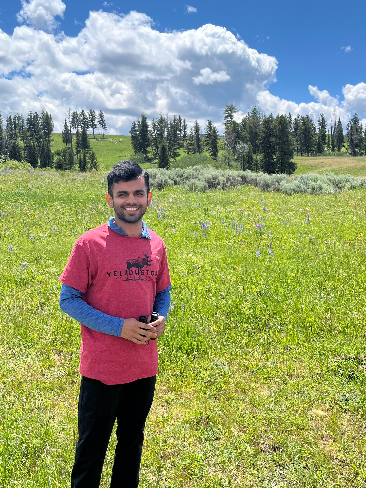
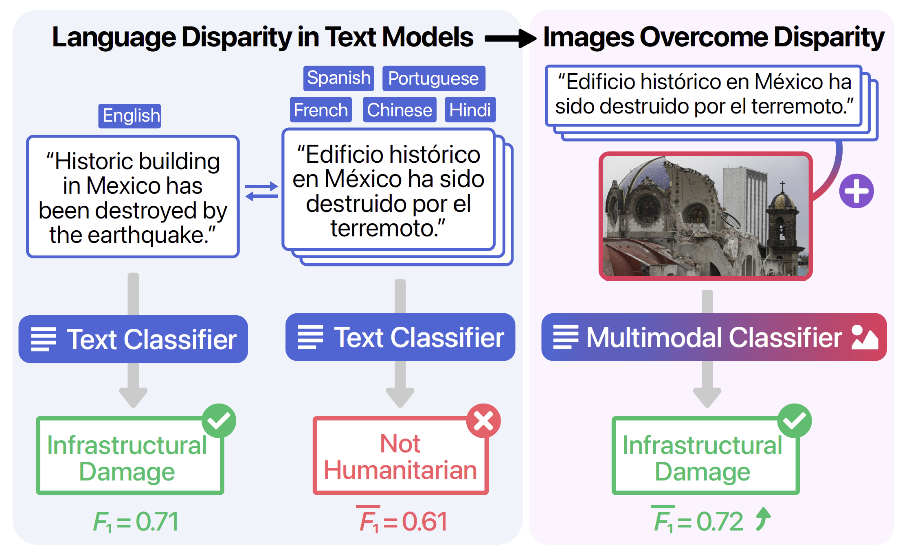
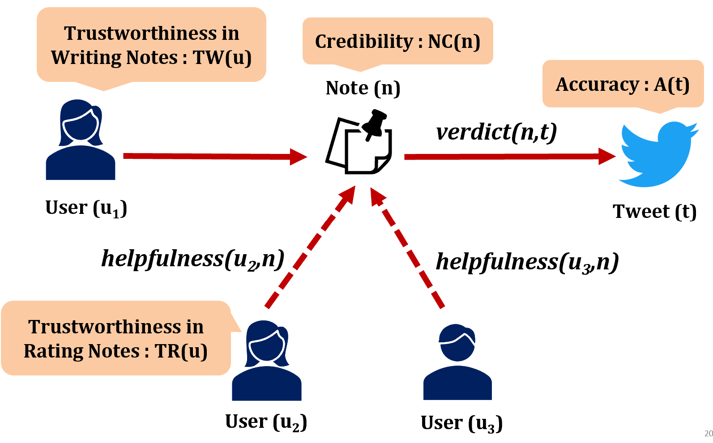
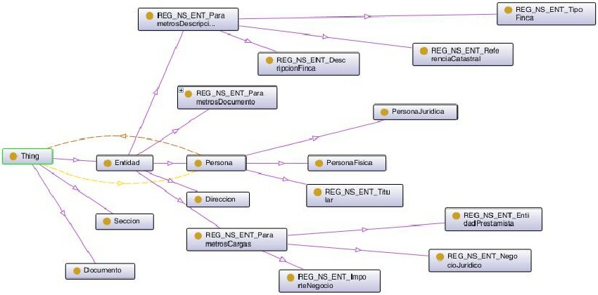
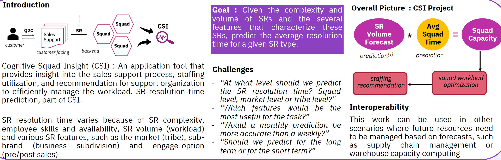
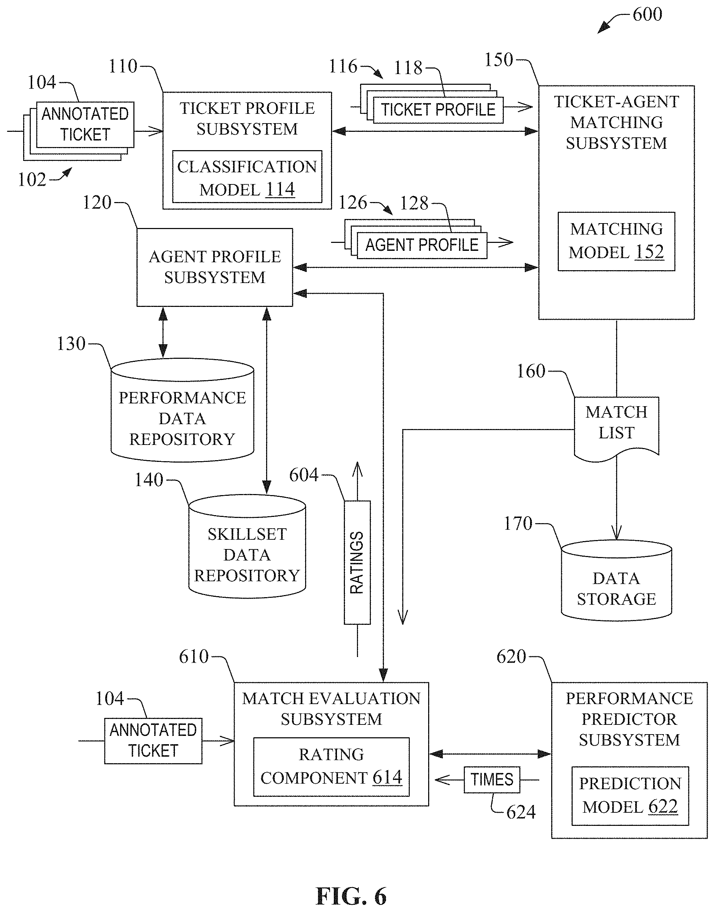
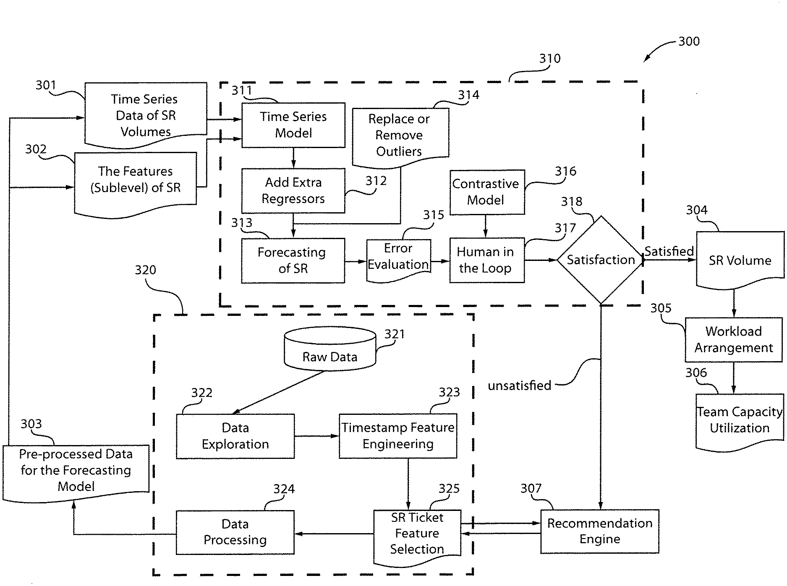
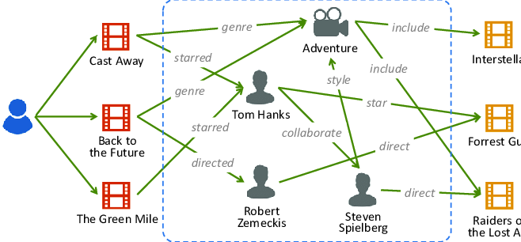
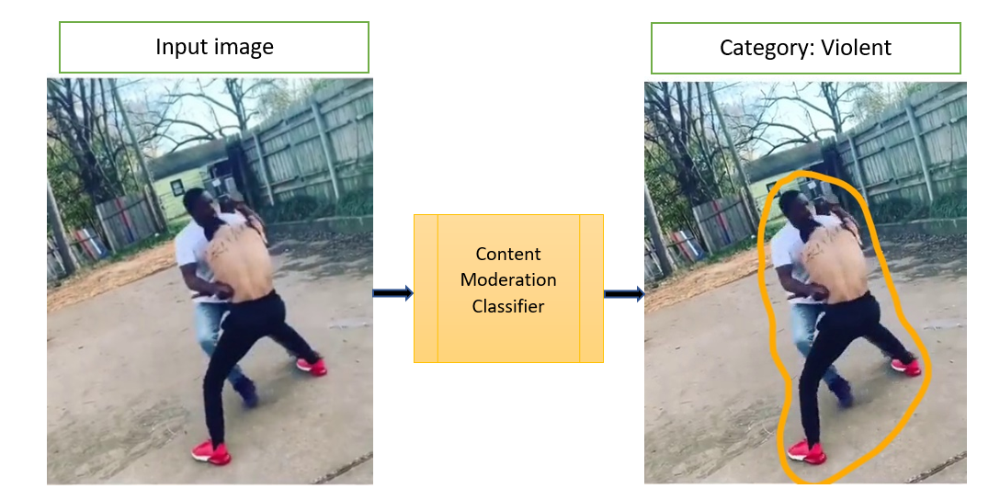

Specialized in AI/ML systems, misinformation detection, and scalable data solutions
Machine learning engineer and researcher with expertise in building production ML systems and conducting impactful research. MS in Computer Science from Georgia Tech. Experience at Intel, IBM Research, and NCR Corporation developing innovative AI solutions for real-world challenges.
Machine Learning Engineer
Research Intern
Software Engineer
Master of Science in Computer Science
Specialization in Machine Learning
Head Teaching Assistant - AI, Ethics and Society (Dr. Ayanna Howard)

ICWSM 2022
Investigated disparity between English and non-English language models, demonstrating how multimodal machine learning incorporating image information can address systematic performance gaps in pre-trained large language models.

ASONAM 2021
First research study on Twitter's Community Notes (Birdwatch). Identified vulnerabilities to manipulation attacks and developed HawkEye, a cold-start-aware graph-based algorithm demonstrating improved robustness. Open-sourced implementation influenced improvements to Twitter's algorithm.

ICDMAI
Proposed solution for identifying similar relationships in automated ontology learning to enable fine-tuning and reduce duplicate relationships.


US20220270019A1

US20220164744A1

